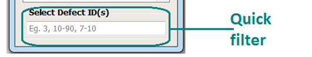

The quick filter attributes includes only
Defect ID(s). It is used to quickly select defects based upon defect
IDs.
Procedure
- Click the text box below Select Defect ID(s)
and specify your defects, separated by commas. You can also specify
multiple ranges in this field. For example, if you want to look
at defects from 10 to 20 and then 25 to 30, you specify 10-20, 25-30.
Figure 1. Quick
Filter
- To turn
off all filters, you use the keyboard shortcut Alt-u-u or specify Utilities >Unfilter
All Filtered.